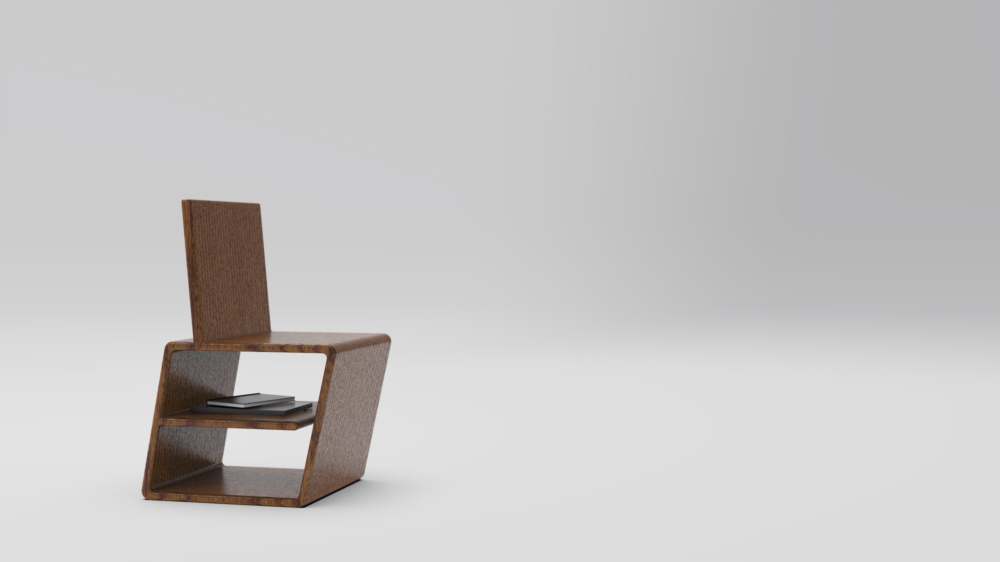
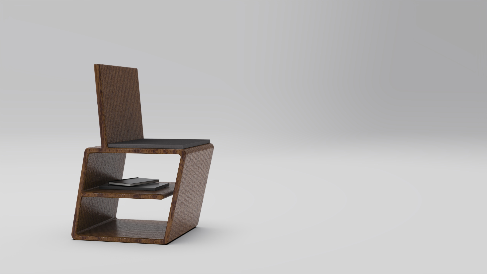
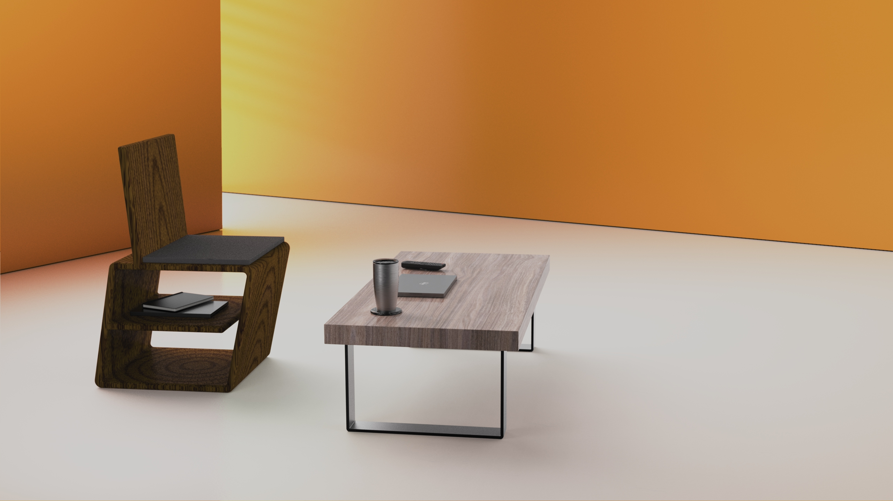
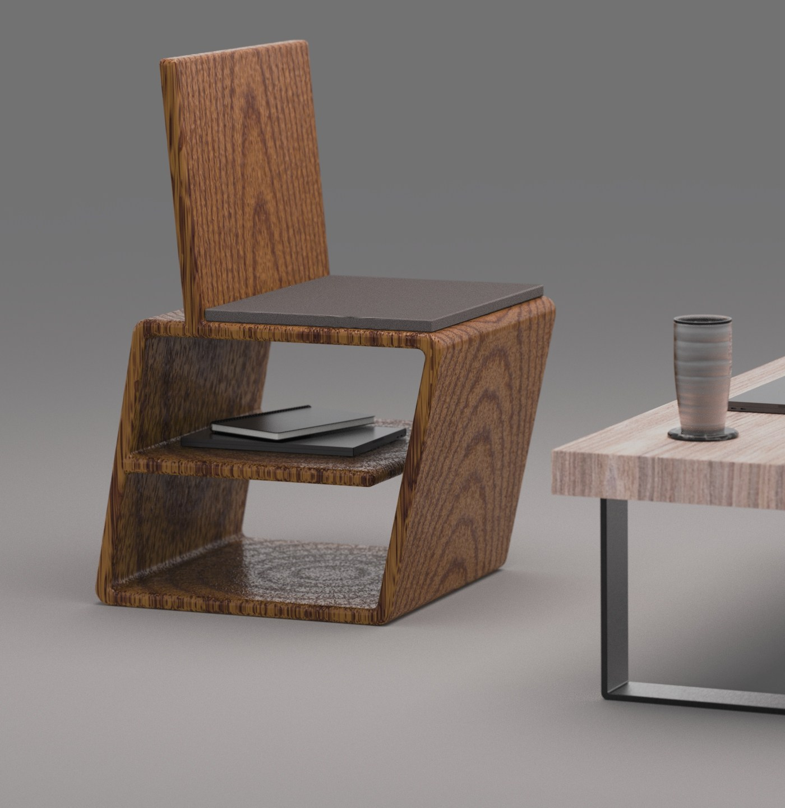

A chair designed around the space most furniture ignores — the volume underneath the seat.
Most chairs treat the space beneath the seat as dead space. Yet that's exactly where small items — books, a magazine, a phone, a remote — end up anyway, usually on the floor or piled on a nearby surface. The problem isn't that storage doesn't exist in chairs. It's that when it does, the design apologizes for it.
The seating market splits into two categories that never overlap:
The gap: no chair at the design-forward tier treats storage as a structural, visible element derived from the chair's own geometry.
The seating market leaves the top-right quadrant completely empty — design quality AND storage function in the same object.
The target user applies kitchenware logic to furniture purchases: the object has to earn its place formally and functionally. They shop at CB2, HAY, Article, or Design Within Reach. They have books, a phone, a remote — small items that float around and never have a home. They'd buy a Le Creuset pot before a generic one, and they'd buy a considered chair before an inert one.
The secondary context is commercial: boutique hotels, co-working studios, gallery reading areas. The same product that works in a living room needs to read as intentional in a contract setting. The design-forward commercial market buys from the same tier as design-conscious homeowners — one object, two contexts.
The gap isn't a feature gap — it's an argument gap. Nobody has decided that a storage shelf should be a formal consequence of a chair's geometry, not an apology beneath it.
Solve comfort and storage simultaneously — not as separate features, but as a unified form. The brief pushed two constraints at once: the chair must seat a person and store items, and both functions must be legible from looking at the object. No hidden compartments. No bolted-on hardware. The storage is structural or it isn't there.
The ZAG name came from the geometry. The angular step in the side panel profile creates the undershelf as a consequence — not a decision made separately from the chair's form.
Each requirement traces directly to a research finding. Nothing in the criteria list was assumed.
Every storage chair hides its compartment — the storage is apologetic because the form can't justify it
Undershelf structurally integrated and open — accessible from the front, visible at a glance, no doors or drawers
Design-forward chairs at $400–1500 use secondary bracing, hardware, or added structure to meet load requirements
The Z-profile carries load without secondary bracing — no corner brackets, no metal hardware visible from the primary view
The target user applies kitchenware logic to furniture — material signals quality before any feature is legible
Primary material solid wood or laminated plywood — no upholstery on structural members; material is visible and honest
Design-forward commercial buyers and design-conscious homeowners shop the same tier — one object, two contexts
Dual-context legibility — proportions and finish options must read as designed in both a living room and a contract setting
3D printed parametric chairs are a real and growing category — the production story is part of the design narrative
Two production paths viable — CNC-milled wood and 3D-print bioplastic both achievable without redesigning the form
This project skipped a sketch phase and went straight into Shapr3D. When the design logic is geometric — when the form is the argument — the fastest way to test it is to model it. Sketching a Z-profile doesn't tell you if the proportions work. Building it does.
The core formal decision happened early: two continuous side panels, each forming a Z-step profile when viewed from the side, connected by a seat platform, a storage shelf, and a back panel. The step in the Z is the shelf. No added mechanism. No drawer. The geometry resolves both problems at once.
The side panel profile reads, from bottom to top: floor skid → front face → shelf platform → seat → back panel. The horizontal offset between the lower front face and the upper section is the storage surface. The angular step that creates the "Zag" silhouette is the same step that creates the undershelf.
This matters formally. A chair with a drawer has a drawer and a chair. The ZAG Chair has one object that is both. The storage isn't a consequence of the design — it is the design.

The undershelf is open and legible at a glance — no explanation required.
Dark walnut stain on wood throughout the structural form. The material choice communicates quality before any feature is legible — walnut reads as craft-grade at residential and commercial scale. The seat uses a drop-in fabric cushion: contrasts with the wood, provides comfort without requiring the structural geometry to solve ergonomics separately.
The form is also a viable 3D print — CNC-laminated plywood and bioplastic FDM are both achievable without redesigning the profile. The production path is the secondary design story.

The chair in context — the undershelf reads immediately without staging or explanation.
ZAG was an exercise in letting the brief write the geometry. When you're solving two problems with one shape — comfort AND storage — you can't afford decorative moves. Every angle earns its place. The rounded corners aren't styling. The step in the profile isn't decoration. The form is the argument, and every element in it is load-bearing in both the structural and the rhetorical sense.
The result is a chair that reads as a designed object at a glance, stores what you actually leave on the floor, and doesn't apologize for either. That was the brief. That's the chair.
Studio render — Z-profile and undershelf legible from the primary view

Lifestyle render — same object reads in a residential or commercial space